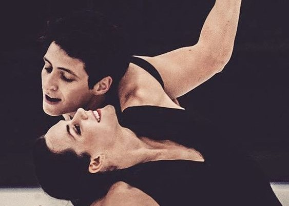

Выдающиеся фигуристы
Оглавление:
Основная страница
Сайт Федерации фигурного катания
Основные страны в фигурном катании
Виды фигурного катания


Главное событие в жизни каждого фигуриста
Ваше фигурное катание
 Медалистки Олимпиады 2010
Медалистки Олимпиады 2010
- Одиночное женское катание
 Юна Ким, олимпийская чемпионка, серебряный призёр Олимпийских игр, двухкратная чемпионка мира
Юна Ким, олимпийская чемпионка, серебряный призёр Олимпийских игр, двухкратная чемпионка мира
- Юна Ким
- Евгения Медведева
- Камила Валиева
Медали на чемпионатах мира
 | Юна Ким | Евгения Медведева | Камила Валиева |
| золото | 2 | 2 | 1 юниорское золото |
| серебро | 2 | | |
| бронза | 2 | 1 | |
- Одиночное мужское катание
 Юдзуру Ханью, двухкратный олимпийский чемпион, двухкратный чемпион мира, лучший фигурист мира
Юдзуру Ханью, двухкратный олимпийский чемпион, двухкратный чемпион мира, лучший фигурист мира
- Юдзуру Ханю
- Евгений Плющенко
- Нейтан Чен
Медали на чемпионатах мира
| Юдзуру Ханю | Евгений Плющенко | Нейтан Чен |
| золото | 2 | 3 | 3 |
| серебро | 3 | | |
| бронза | 3 | 1 | 1 |
- Парное фигурное катание
Суй Вэньцзин, Хань Цун, олимпийские чемпионы, серебряные призёры олимпийских игр, двухкратные чемпионы мира
- Волосожар-Траньков
- Суй-Хань
- Гордеева-Гриньков
Медали на чемпионатах мира
| Волосожар-Траньков | Суй-Хань | Гордеева-Гриньков |
| золото | 1 | 2 | 4 |
| серебро | 2 | 3 | 1 |
| бронза | | | |
- Танцы на льду
Тесса Виртью, Скот Мойр, двухкратные олимпийские чемпионы, серебряные призёры олимпийских игр, трёхкратные чемпионы мира
- Виртью-Моир
- Бестемьянова-Букин
- Попадакис-Сизерон
Медали на чемпионатах мира
| Виртью-Моир | Бестемьянова-Букин | Попадакис-Сизерон |
| золото | 3 | 4 | 5 |
| серебро | 3 | | 3 |
| бронза | 1 | | 1 |